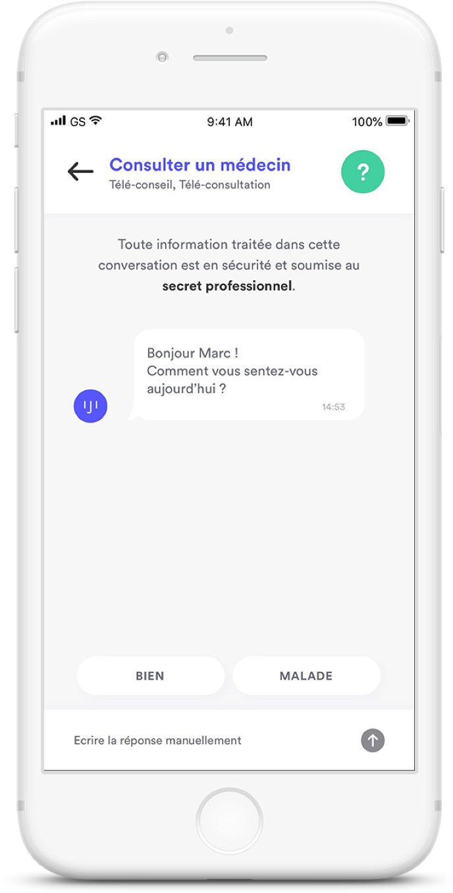

Votre santé assurée en télémédecine partout
à l’étranger.
Une application de consultation et de conseils santé en ligne, disponible immétidatement 24/7, supportée par des médecins et experts grâce à des appels vidéo.
Découvrir

IJI votre assistant télésanté
Commment fonctionnent les téléconsultations médicales ?
Vous payez pour la visite lors de la réservation.
Nous acceptons toutes les cartes de crédit.
La consultation coûte 25€* pour les adultes, facturée et remboursée par la sécurité sociale française et votre complétaire santé (En partenariat avec Allianz).
Les consultations pou les enfants, les jeunes de moins de 20 ans et les adultes de plus de 85 ans sont toujours gratuites.
Questions fréquentes
Nous n’avons pas répondu à vos questions ? Cliquez-ici